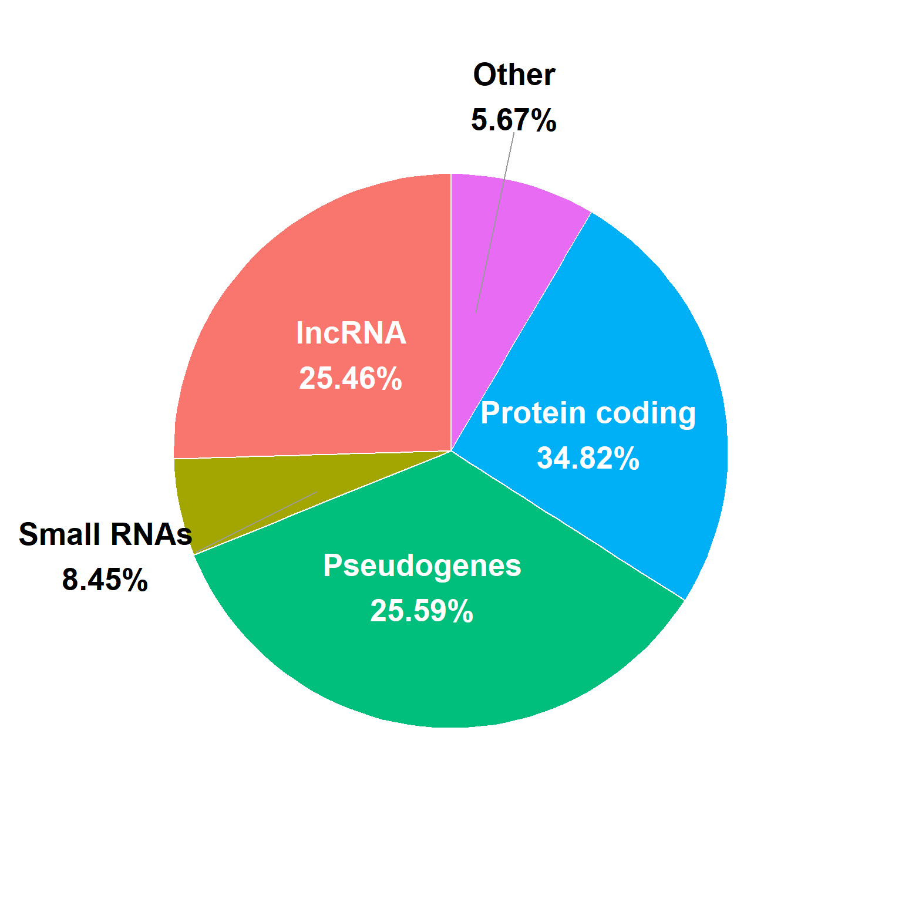

Analysis of iPSC Gene Expression (will be changed)
Final Project
Introduction
The discovery of human induced pluripotent stem cells (iPSCs) by Takahashi and Yamanaka in 2007 (Takahashi et al., 2007) has revolutionized the gregenrative medicine field. iPSCs are created by reprogramming somatic cells into an embryonic like state using the Yamanaka transciption factors.: SOX2, OCT4, KLF4, and c-Myc). These cells have vast capabilities due to their ability to model human development and diseases in vitro, and their potential for patient specific (autologous) and “off the shelf” (allogeneic) cell therapies (Cerneckis et al., 2024).
With that being said, the characterization of iPSC lines is essential in any experimental or manufacturing process to ensure consistency in culturing. This includes analyzing the expression of pluripotency (stem cell) markers, differentiation markers, and potential chromosomal abnormalies, to access the population of the culture. This is commonly done using techniques such as reverse transcriptase or real time quantitative PCR (RT-qPCR) to analyze mRNA expression (Artyukhov et al., 2017), or using an antibody based experiment to analyze protein expression levels, such as Flow Cytometry or immunocytochemistry. When conducting these experiments, specifically RT-qPCR, reference, also known as housekeeping, genes are used to normalize the expression of other genes in a sample (Artyukhov et al., 2017). This allows the expression of genes to be compared across different samples, since it is presumed that the expression of the housekeeping gene is consistent across all of the samples. In stem cell samples, however, it has been found that the commonly used housekeeping genes, such as GAPDH, appear to fluctuate in iPSC samples (Panina et al., 2020), making it difficult to achieve accurate normalization data.
RNA Seq is a technique that sequences the entirety of RNA molecules in a given sample, rather than using gene specific primers or probes as in RT-qPCR and other techniques. This allows the entire transciptome to be analyzed, providing a complete picture of the expression of genes in a sample (Wang et al., 2009). Additionally, gene expression is calculated by dividing the raw counts of a gene by the total counts in a sample, eliminating the need for a housekeeping gene. This allows for an unbiased and quantitiative analysis of millions of genes in sample (Wang et al., 2009). Despite these advantages, RNA-Seq is far more time consuming and expensive than RT-qPCR and other experiments, making it non practical in a manufacturing setting. Therefore, utilizing RNA-Seq to analyze iPSC samples could provide insight into housekeeping gene expression, allowing researchers to select ideal reference genes for their analysis.
A similar study, conducted by Carcamo-Orive et al., investigated the variability of gene expression across 317 iPSC lines generated from 101 individuals (Carcamo-Orive et al., 2017) and created a publically avaible data set of their raw RNA Seq data. They found that genetic variability in the iPSC lines was influenced by a donor specific gene expression pattern, specifically influenced by donor age, sex, ancestry, and reprogramming variabilies. iPSCs can also be reprogrammed from a variety of somatic cells, such as blood, skin fibroblasts, hair keratinocytes, urine cells, mesencymal stem cells, and bone marrow (Poetsch et al., 2022). While some somatic cells are easier to obtain than others, such as blood cells and fibroblasts, iPSCs from these lines are associated with higher genomic mutations due to the somatic cells’ high turnover rate. Additionally, iPSCs appear to have an epigenetic memory of their tissue of origin, which has been found to influence their differentiation (Poetsch et al., 2022). All of these factors, and many others, could be contributing to the variations in gene expression in iPSC samples.
This publicly available dataset from Carcamo-Orive et al. was used to analyze the expression of RNA across these iPSC samples, with a focus on pluripotency markers, differentiation markers, and housekeeping genes.
Methods
Data Cleaning
RNA-Seq counts per million data was acquired from Stemformatics (Stemformatics Datasets, n.d.), using the Carcamo-Orive (2017) dataset (Carcamo-Orive et al., 2017). Genes in this study were referred to by their Ensembl ID, so gene information was integrated from Emsembl database (Ensembl Biomart, n.d.). To begin to clean the data, the Ensembl gene ID in both the count per million data frame and Ensembl data frame were mutated, using the dplyr package (Wickham et al., 2023) from tidyverse (Wickham, 2023), to Gene stable ID. The Ensembl gene data frame was then filtered for the genes in the count per million data set (reducing the number of genes from 86,369 to 56,693).
further cleaning of the count per million data is needed
Figure 1
A new column was then added to the Ensembl data frame called Category, uses the Gene type column to categorize the genes into the following categories: Protein coding, long non coding RNA (lncRNA), Small RNAs, Pseudogenes, and Other. A count of the number of genes in each category was then performed by using group by Category and summarizing a count. A fraction and percentage were then calculated by adding a column to the data frame that divides the count by the sum of count (i.e. total count for all categories). This summarized data will be plotted as a pie chart, so modifications were made, such as defining ymax, ymin, and label position for ease of plotting. Text labeled were also created, which include the category and the percentage calculated above. Percentages over 10% where then added to a subcategory, called large slice, so that large categories could be labeled on the slices but small categories would be labeled outside of the pie chart. ggplot2 (Wickham, Chang, et al., 2025) and scales (Wickham, Pedersen, et al., 2025) packages were used to create the pie chart, by plotting “” on the x axis, fraction on the y axis, and fill by category. Geom_bar and coord_polar were used to format the pie chart, using fraction for the size and angle of the slices. Theme_void was then used to remove the default plot elements, creating a white background. Plot.margin was then set to 0 on all sides to remove white space around the plot. Labels on large slices were added by using the subset, large_slice categories, and adding a label using the label position and label text defined above. Repel labels were added to categories not in large_slices, using the same label position and label text.
continue methods for following figures …
Results
Figure 2. Expression by RNA Type (similar to figure 1 but expression based rather than count based)
Figure 3. Expression of Pluripotency Genes (SOX2, OCT4, KLF4, c-Myc, TRA-181, TRA-1-60, NANOG, SSEA4)”
Figure 4. Expression of Differentiation Genes (ectoderm: PAX6, NESTIN or SOX1 (neural projenitor/stem cell markers), KRT14 (epithelial), endoderm: SOX17, AFP (hepatic), PDX1 (pancreatic), mesoderm: CD34 (hematopoitic), CD90 (mesenchymal), NKX2.5 (cardiac progenitor))
Figure 5. Expression of Housekeeping Genes (some sort of general figure or sorted by housekeeping type (i.e. ribosomal, metabolic, cytoskeleton, etc.))
Figure 6. Expression of Housekeeping Genes (focusing on some genes, either over time during reprogramming or across different conditions)
these figures may be split into more than the six described depending on the data
figures will include heat maps, bar charts, and possibly volcano plots
Discussion
Conclusion
References
Artyukhov, A. S., Dashinimaev, E. B., Tsvetkov, V. O., Bolshakov, A. P., Konovalova, E. V., Kolbaev, S. N., Vorotelyak, E. A. & Vasiliev, A. V. (2017). New genes for accurate normalization of qRT-PCR results in study of iPS and iPS-derived cells. Gene, 626, 234–240. https://doi.org/10.1016/j.gene.2017.05.045
Carcamo-Orive, I., Hoffman, G. E., Cundiff, P., Beckmann, N. D., D’Souza, S. L., Knowles, J. W., Patel, A., Papatsenko, D., Abbasi, F., Reaven, G. M., Whalen, S., Lee, P., Shahbazi, M., Henrion, M. Y. R., Zhu, K., Wang, S., Roussos, P., Schadt, E. E., Pandey, G., … Lemischka, I. (2017). Analysis of Transcriptional Variability in a Large Human iPSC Library Reveals Genetic and Non-genetic Determinants of Heterogeneity. Cell Stem Cell, 20(4), 518–532.e9. https://doi.org/10.1016/j.stem.2016.11.005
Cerneckis, J., Cai, H. & Shi, Y. (2024). Induced pluripotent stem cells (iPSCs): molecular mechanisms of induction and applications. Signal Transduction and Targeted Therapy, 9(1), 112. https://doi.org/10.1038/s41392-024-01809-0
Ensembl biomart. (n.d.). https://www.ensembl.org/biomart/martview/95a58994f7c82fc6f316078faa7f92e7
Panina, Y., Germond, A. & Watanabe, T. M. (2020). Analysis of the stability of 70 housekeeping genes during iPS reprogramming. Scientific Reports, 10, 21711. https://doi.org/10.1038/s41598-020-78863-5
Poetsch, M. S., Strano, A. & Guan, K. (2022). Human induced pluripotent stem cells: From cell origin, genomic stability, and epigenetic memory to translational medicine. Stem Cells, 40(6), 546–555. https://doi.org/10.1093/stmcls/sxac020
Stemformatics datasets. (n.d.). https://www.stemformatics.org/datasets/view?id=7274
Takahashi, K., Tanabe, K., Ohnuki, M., Narita, M., Ichisaka, T., Tomoda, K. & Yamanaka, S. (2007). Induction of pluripotent stem cells from adult human fibroblasts by defined factors. Cell, 131(5), 861–872. https://doi.org/10.1016/j.cell.2007.11.019
Wang, Z., Gerstein, M. & Snyder, M. (2009). RNA-seq: A revolutionary tool for transcriptomics. Nature Reviews. Genetics, 10(1), 57–63. https://doi.org/10.1038/nrg2484
Wickham, H. (2023). Tidyverse: Easily install and load the tidyverse. https://tidyverse.tidyverse.org
Wickham, H., Chang, W., Henry, L., Pedersen, T. L., Takahashi, K., Wilke, C., Woo, K., Yutani, H., Dunnington, D. & van den Brand, T. (2025). ggplot2: Create elegant data visualisations using the grammar of graphics. https://ggplot2.tidyverse.org
Wickham, H., François, R., Henry, L., Müller, K. & Vaughan, D. (2023). Dplyr: A grammar of data manipulation. https://dplyr.tidyverse.org
Wickham, H., Pedersen, T. L. & Seidel, D. (2025). Scales: Scale functions for visualization. https://scales.r-lib.org